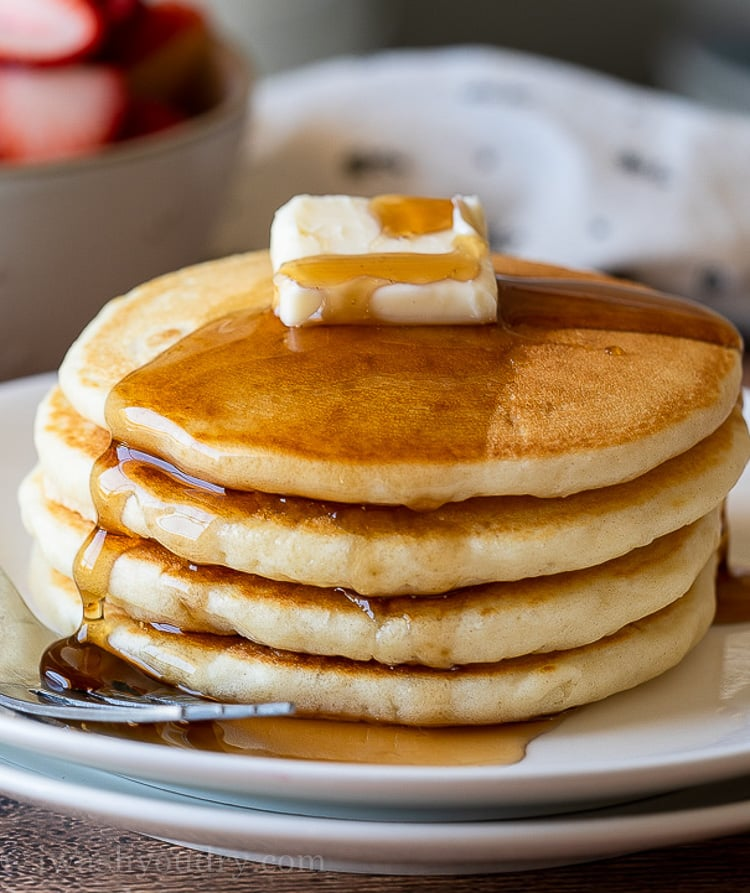

Classic Pancakes
Fluffy, light, and perfect for breakfast — these pancakes are a weekend favorite!
🍽️ Yield:
Makes about 6 pancakes
🧾 Ingredients
- 1 cup (120g) all-purpose flour
- 2 tbsp sugar
- 1 tbsp baking powder
- Pinch of salt
- 1 egg
- ¾ cup milk (180ml)
- 2 tbsp melted butter
- 1 tsp vanilla extract (optional)
- Butter or oil for cooking
👩‍🍳 Preparation
- In a bowl, mix flour, sugar, baking powder, and salt.
- In another bowl, whisk egg, milk, melted butter, and vanilla.
- Combine wet and dry ingredients until just mixed (don’t overmix).
- Heat a nonstick pan over medium heat. Add a bit of butter or oil.
- Pour ¼ cup batter per pancake. Cook until bubbles form, flip and cook other side.
- Serve hot with syrup, fruits, or your favorite toppings.